Cómo mandar sus invitaciones con pases
Sigan los pasos en orden. En cada foto, el círculo dorado marca dónde tocar. Al final: cómo descargar sus fotos y videos.
-
Abran el sobre
Abran el enlace de su invitación. Verán un sobre: toquen el sello azul.
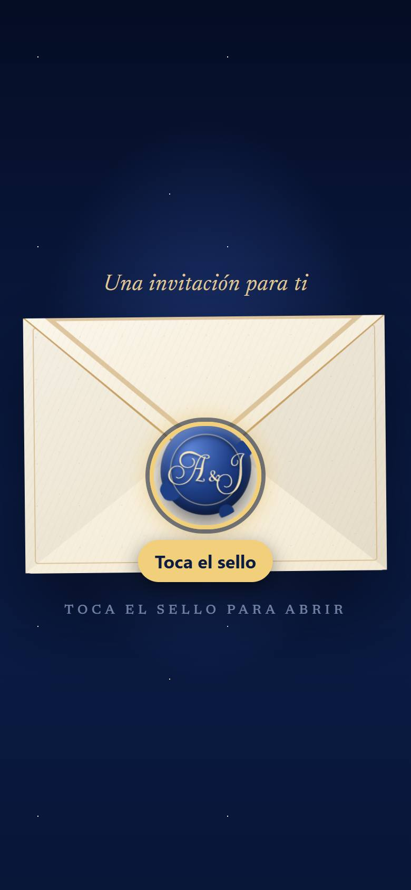
-
Bajen hasta sus nombres
Empieza un video. Deslicen el dedo hacia arriba para bajar. Sigan bajando poquito a poquito hasta que la rosa azul se abra y aparezcan sus nombres grandes: Renata & Mauricio.
-
Toquen 3 veces sus nombres
Toquen 3 veces rápido justo encima de Renata & Mauricio, como cuando tocan una puerta: toc, toc, toc.
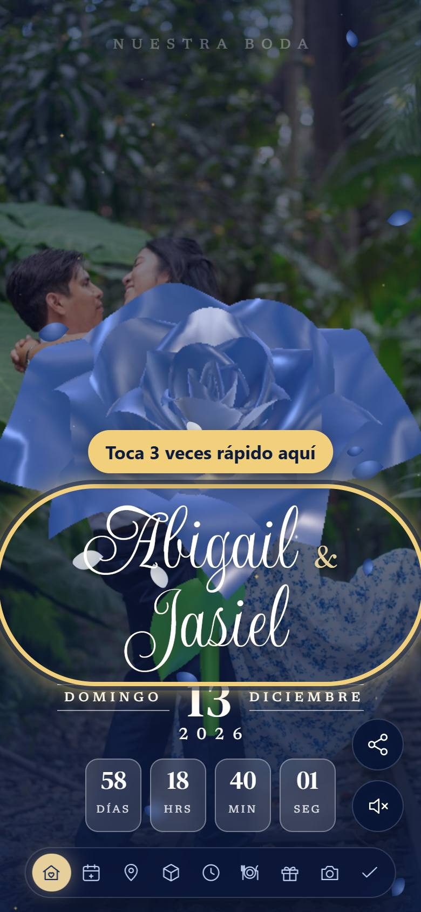
-
Escriban la clave
Sale una ventanita que dice Panel de administrador. Escriban la clave demo y toquen Entrar.
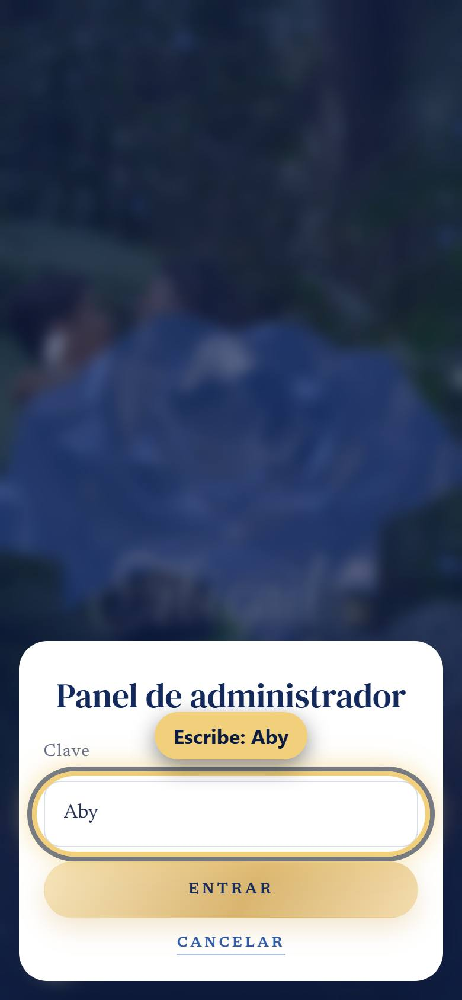
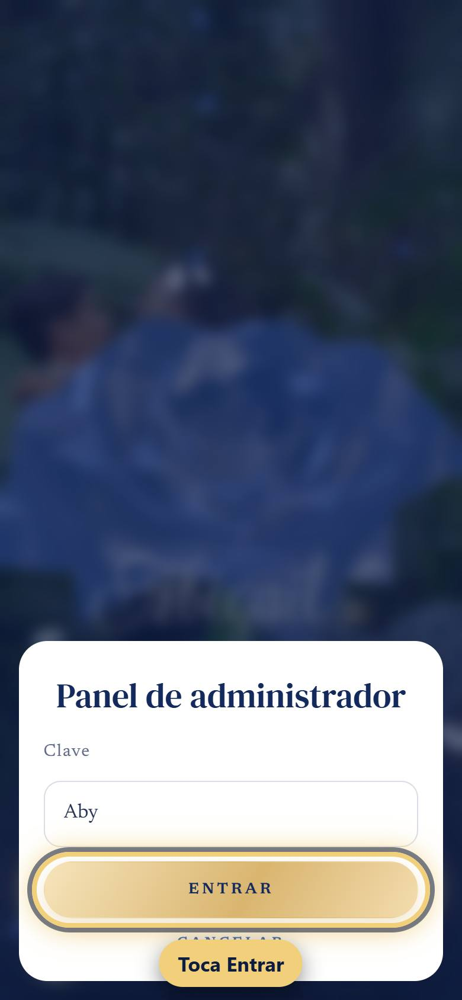
-
Escriban el nombre del invitado
Se abre Enviar invitación. En la primera casilla escriban el nombre de quien la va a recibir.
Ejemplo: Familia López. Ese nombre aparecerá en su sobre.
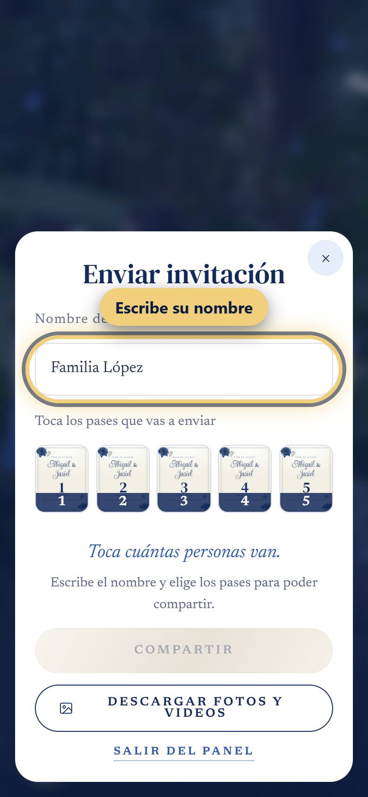
-
Toquen cuántas personas van
Hay 5 tarjetitas con los números 1, 2, 3, 4 y 5. Cada número es cuántas personas entran con ese pase. Toquen el que corresponde.
¿Van 4? Toquen el 4. ¿Van 6? Toquen el 4 y luego el 2. ¿Se equivocaron? Toquen la etiqueta “Pase de 4 ×” y se quita.
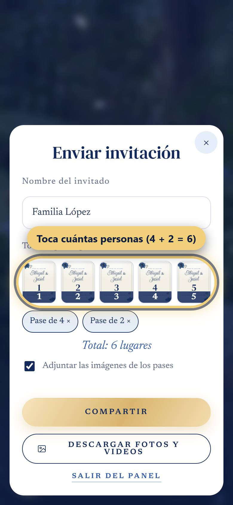
-
Toquen Compartir y envíen
Toquen el botón dorado Compartir. Se abre el menú del teléfono: elijan WhatsApp, busquen a su invitado y toquen Enviar.
El botón Compartir se enciende solo cuando ya escribieron el nombre y eligieron al menos un pase.
¿Marcar “Adjuntar las imágenes de los pases”?
En los dos casos, los pases siempre aparecen dentro de la invitación, en “Tus pases”. La casilla solo decide qué llega en el mensaje de WhatsApp:
✅ Marcada: el invitado recibe las tarjetas de sus pases como fotos, junto con el mensaje y el enlace. Las puede guardar y enseñar en la entrada.
⬜ Sin marcar: recibe solo el mensaje con el enlace. WhatsApp muestra la vista previa de su pase, y lo ve al abrir la invitación.
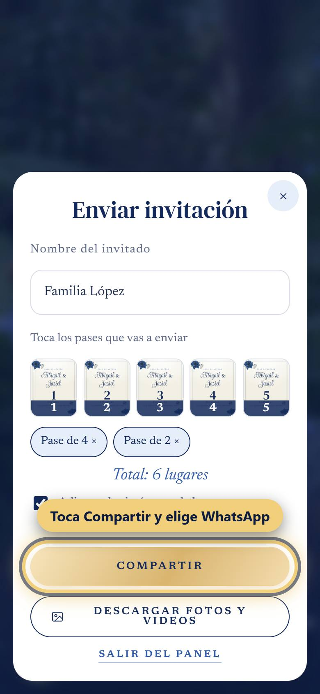
-
¿Otro invitado? Repitan
Al regresar a la invitación, la ventana Enviar invitación ya está abierta otra vez, vacía, con un aviso verde: “✓ Enviada a Familia López”. Repitan desde el paso 5 con el siguiente invitado.
Cuando terminen, toquen Salir del panel o la ✕ de arriba.
-
Descargar fotos y videos
Abran el panel como en los pasos 1 a 4 y, en la ventana Enviar invitación, toquen Descargar fotos y videos.
Ahí están los dos videos (incluido “Un poquito de nosotros”, que solo ustedes pueden ver), las fotos de la sesión, las tarjetas de los pases y las fotos que suban sus invitados al álbum.
Marquen la casilla de lo que quieran (o Seleccionar todo) y toquen Descargar seleccionados. Para bajar una sola cosa, toquen su flechita ↓.
En iPhone, al terminar aparece el botón “Guardar en Fotos” para pasarlos a su galería.
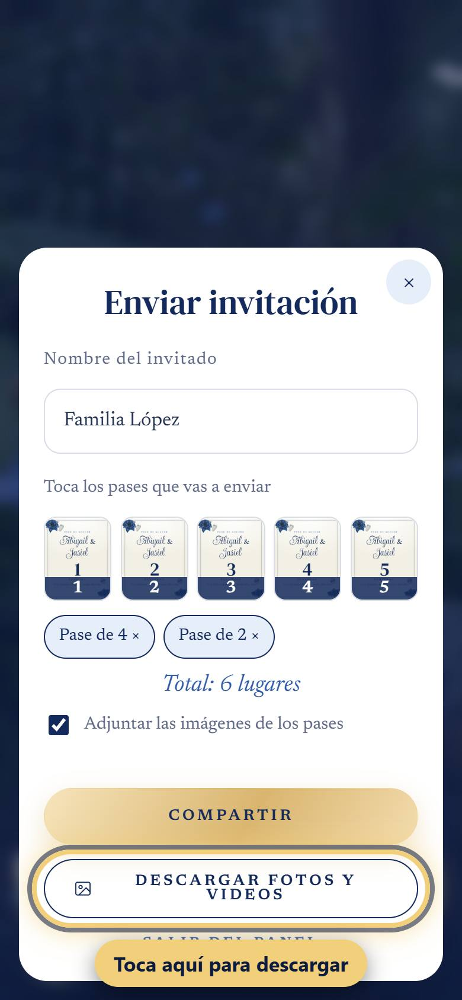
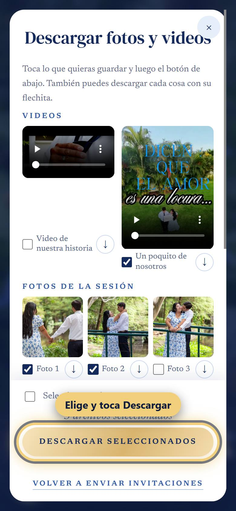
Esto es lo que ve su invitado
Su sobre lleva su nombre, y dentro encuentra la sección Tus pases con sus lugares. Al confirmar, solo puede elegir hasta los lugares que le dieron, y la confirmación les llega por WhatsApp.
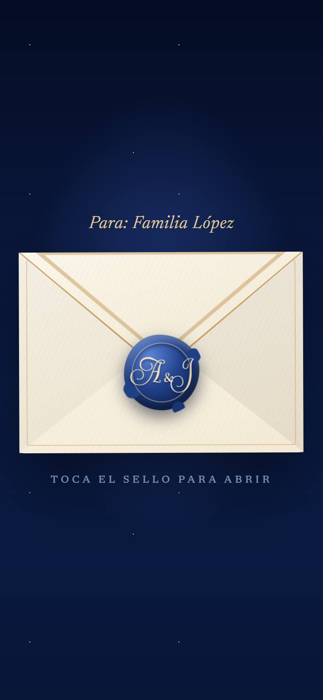
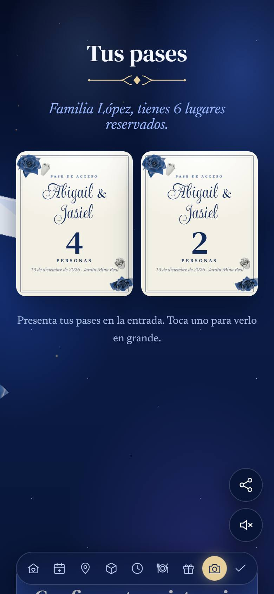
Si algo no sale
- No aparece la ventanita de la clave: toquen más rápido, justo encima de las letras de sus nombres.
- Dice “Clave incorrecta”: escriban demo otra vez, sin espacios.
- No ven sus nombres: bajen un poquito más; aparecen cuando la rosa ya está abierta.
- El botón Compartir está apagado: falta escribir el nombre o elegir un pase; debajo de los pases dice qué falta.